We had been warned that Plitvice Lakes would be the highlight of the trip. We'd dismissed this as the predictable enthusiasm of recent visitors and assumed the reality would be marginally less spectacular than the brochure version. We were wrong. Plitvice Lakes National Park, designated a UNESCO World Heritage Site in 1979, is one of the most visually extraordinary places in Europe, and the spring visit — with snowmelt at maximum and the foliage in its most vivid new green — amplified everything.
The park encompasses sixteen interconnected lakes arranged in two groups — the Upper and Lower Lakes — linked by waterfalls, boardwalks, and short boat crossings. The water chemistry is the key to the colour: calcium carbonate dissolves from the surrounding limestone, and the resulting calcium-magnesium bicarbonate solution absorbs sunlight's red wavelengths preferentially, leaving the characteristic blue-green that seems too vivid to be natural. It is completely natural.
We stayed overnight at Fenomen Plitvice, a collection of luxury cabins on the edge of the park that placed us 500 metres from the main entrance. This meant we arrived at opening time, before the coaches from Zagreb and Split disgorged their thousands, and had the upper boardwalks essentially to ourselves for the first two hours. By the time the crowds arrived we'd already walked the best sections and were positioned for the main event.
Veliki Slap — at 78 metres the tallest waterfall in Croatia — is announced by the sound long before you see it. We heard it from the far side of the lower lake, a continuous low roar that built as we approached along the boardwalk. When it came into view, framed by canyon walls and spring foliage, it was immediately clear that the superlatives were justified. The volume of water in late April — after a wet winter and warm spring — had pushed the falls to something close to maximum capacity, and the spray carried fifty metres from the base in a fine mist that caught the morning light.
The Great Waterfall
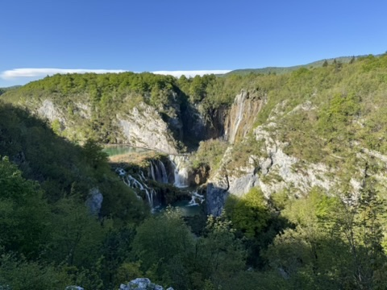
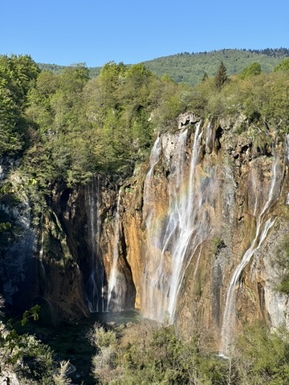
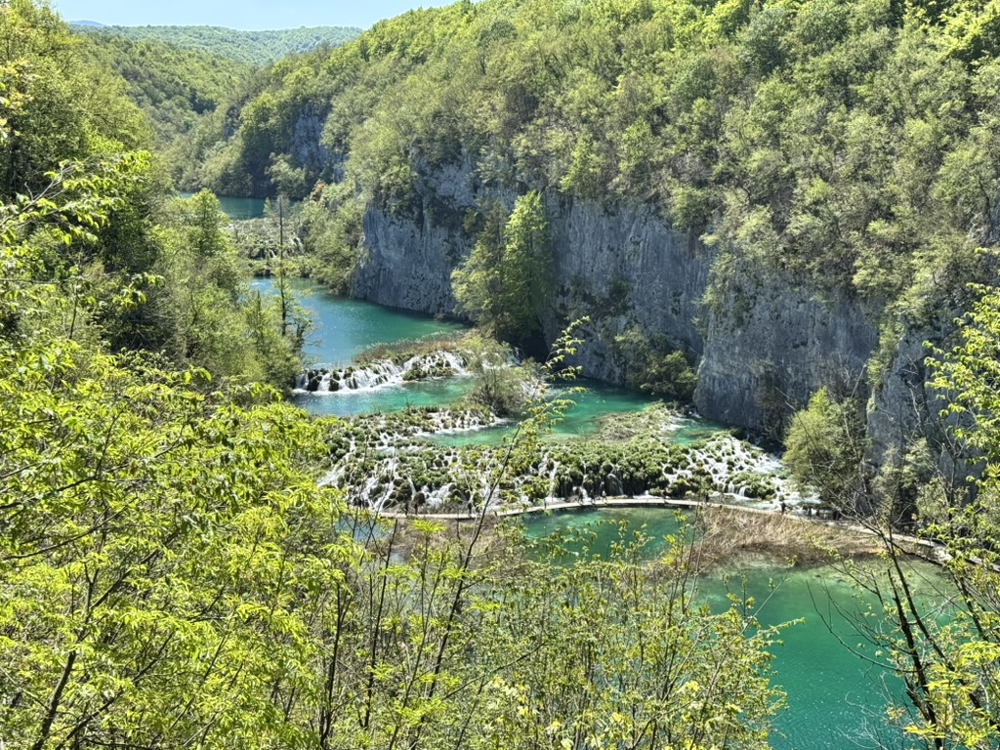
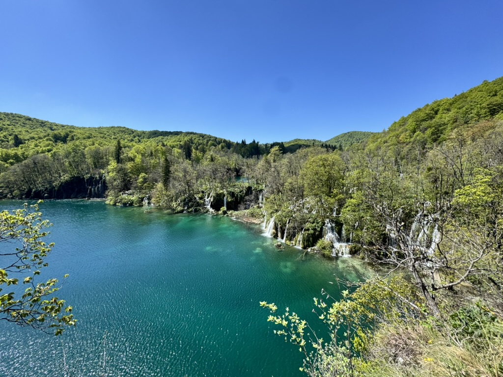
The Cascades & Pools
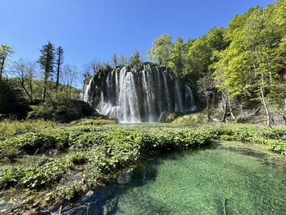
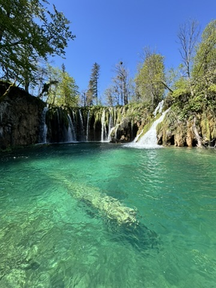
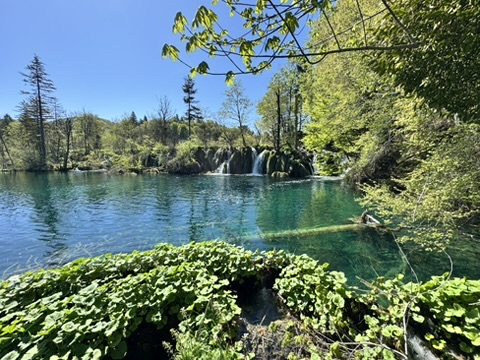
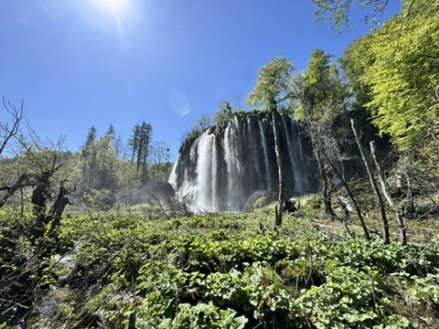
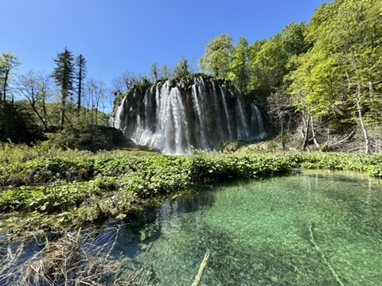
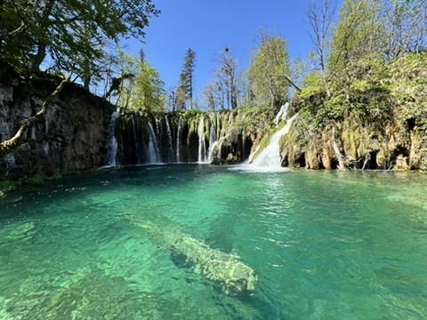
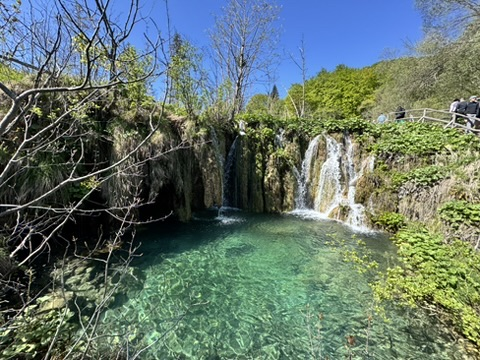
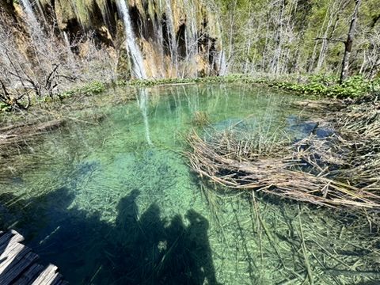
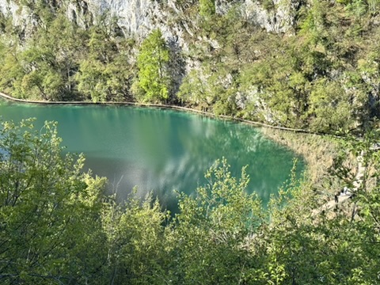
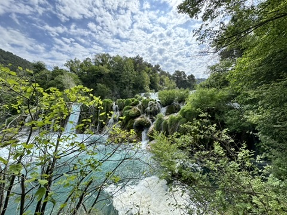
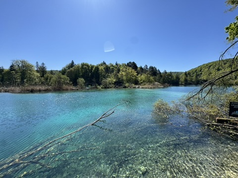
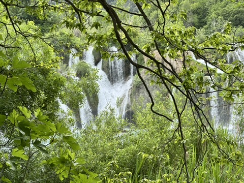
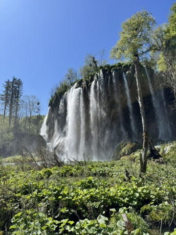
The boardwalk system at Plitvice is an engineering achievement almost as impressive as the natural phenomenon it serves. Wooden walkways extend directly across the shallower lakes, held just above the water surface on timber posts, so that you walk literally across the surface of the turquoise lakes with the water visible through the gaps in the boards below your feet. In spring, with the lakes full, the boardwalks sit inches above the surface and the sensation of walking on water is close to complete.
The lakes change character progressively as you descend from the Upper to the Lower group. The Upper Lakes are broader, shallower, and more woodland-enclosed; the Lower Lakes are deeper, more dramatically set in the canyon, and offer the most concentrated collection of waterfalls. Both are extraordinary. The short electric boat that crosses the main lower lake provides a respite from walking and one of the better perspectives on the canyon walls.
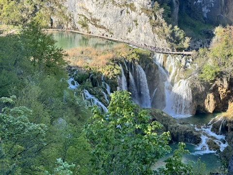
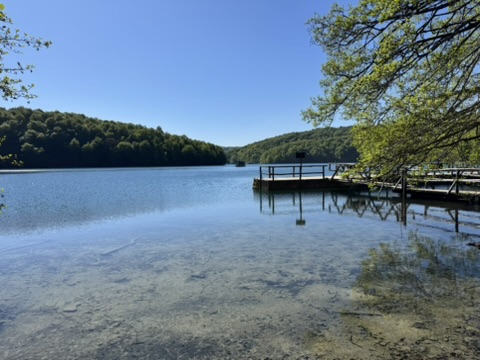
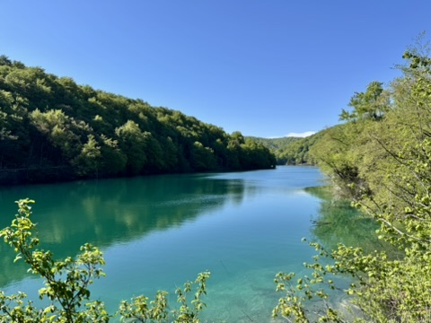
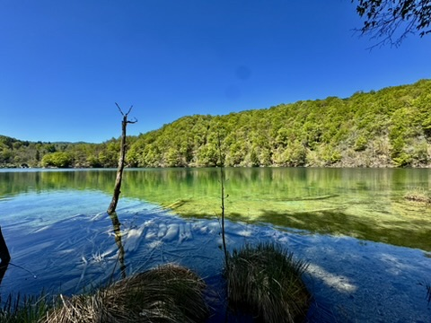
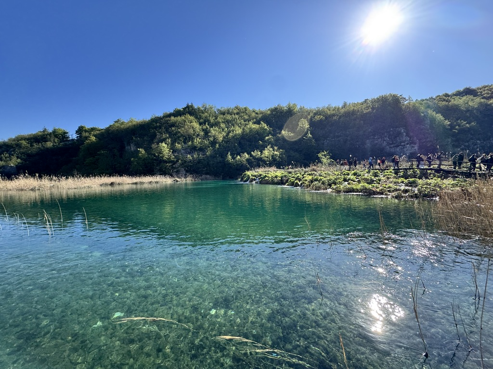
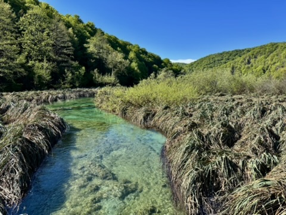
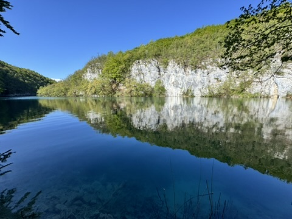
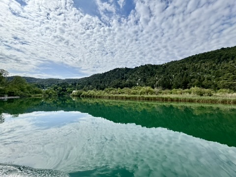
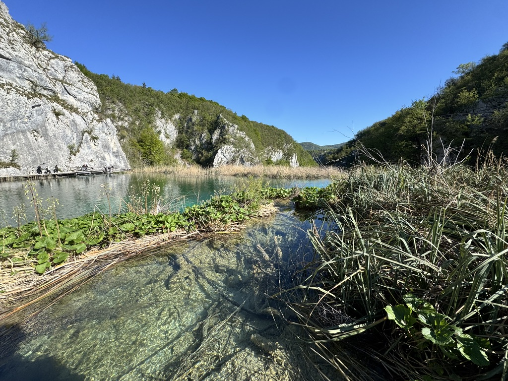
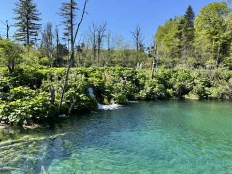
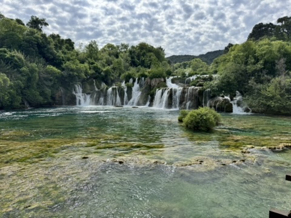
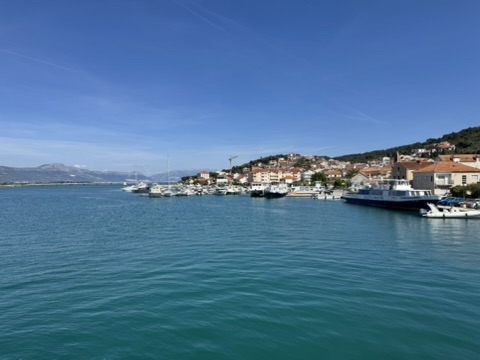